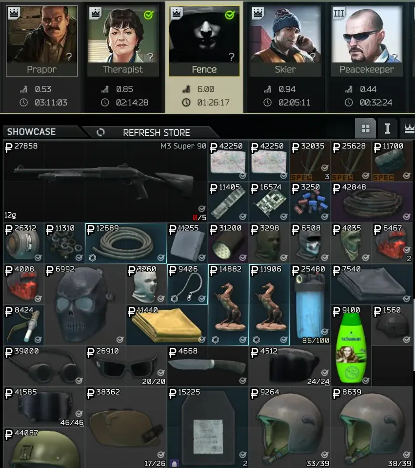

Mod
FIR Fence Purchases
- Downloads
- 8,143
- Favourites
- 20
- Mod lists
- 34
📜 Description
FIR Fence Purchases is a mod for Single Player THE CITY that marks every bought item from Fence as Found in Raid.
📁 Installation
- Download the latest release
- Copy the
SPTfolder into your SPT installation folder - Start the game
📷 Preview

📄 License
Distributed under the MIT License. See LICENSE for more information.